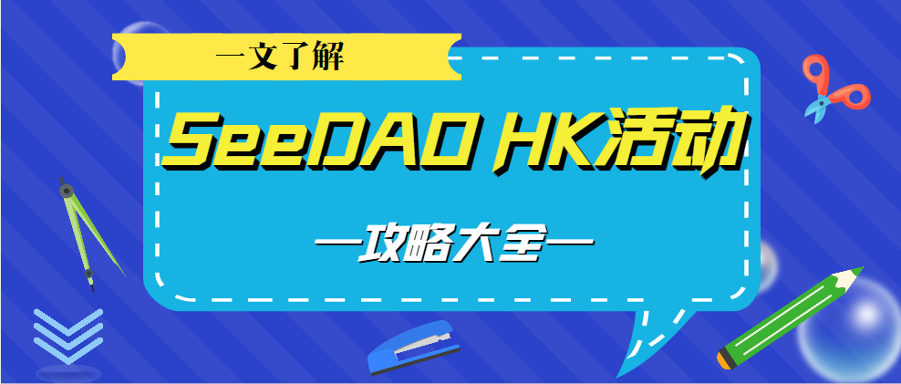

“DAO HongKong 机遇与变革”议程揭秘！
作者: SeeDAO
“DAO HongKong机遇与变革：连接东西方DAO，探索Web3未来”

4月16日，由SeeDAO与.bit联合主办的“DAO HongKong机遇与变革：连接东西方DAO，探索Web3未来”将在香港康得思酒店（Cordis Hotel）宴会厅精彩呈现。
自16号早上9时起，活动邀请到的技术领袖、专家学者、行业精英等嘉宾将围绕DAO的核心议题分享DAO组织的变革与发展机遇，从DAO的实践和治理、商业模式、最新发展、应用、工具、市场趋势、投资等多个角度展开深入对话，全日持续不间断地为参与者带来近20场视听盛宴。
此次活动设置成开幕发言+主题演讲+系统发布会+圆桌对谈的形式，具体议程依次为：Orange DAO的高级风险投资合伙人Thomas WongGitcoin DAO核心贡献者Bob JiangPolygon Labs DAO生态发展核心成员 0xjusticeNounsDAO KOL、Web3随意门发起人屏风BlockchainGov研究员Sofia CossarKleros Cooperative、HKU研究员Abeer SharmaWeb3 研究员、FWB 和SeedClub 贡献者王超PolyU Blockchain Club联合创始人 Harvey0xU Hong Kong Blockchain Club主席Jack Dawson及其他30余位行业领袖、投资者、专家、研究者、大学社团为代表等确认担任此次活动的演讲嘉宾。长期以来，亚洲的DAO与西方的DAO缺乏深入交流，各自在自己的文化背景下进行着DAO的探索和尝试。为了促进东西方之间DAO组织的实践探讨与合作，借万向区块链在香港举办Web3峰会之际我们邀请东西方的DAO实践者齐聚一堂，共同探讨行业现状和方向，促进彼此的沟通和了解。想要参与此次盛会的朋友请于4月15号之前注册我们的活动，以便后续接收此次活动联合主办方.bit 发放的的纪念空投DAOHK.bit 的子账号一份。注册完成后，您将收到邮件一封。该邮件会用于在活动现场检票使用。4月16日当天的活动现场，所有接收到纪念空投的参会者，将可以使用活动纪念空投参与有奖投票。投票地址会在Voty 官方推特上列出。参与者进入活动页面后，可使用获得纪念空投的地址登陆，并进行投票。投票内将列出当日所有的演讲嘉宾，参与者将可以使用活动纪念空投进行投票，和其他所有参会者一起，选出他们最喜欢的嘉宾。活动结束前，我们将统计各位嘉宾所收获的票数，并选取投票数最高的那位演讲嘉宾，并为他提供1000U的奖金。我们还会从所有为他投票的观众中，选取2位进行抽奖。获奖观众将获得来自活动官方500U的空投奖励。除了干货满满的演讲嘉宾和活动现场的纪念空投，后续还将有更多惊喜，你还在等什么呢？赶紧扫描下方二维码报名吧！

